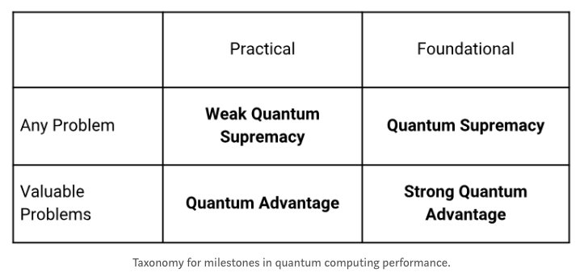

I work to make quantum computing useful, sooner, and for more people. My tools are quantum computer architecture and quantum software/algorithm engineering.
I run a quantum technology research group at Goldman Sachs as well as the unitary fund, a non-profit research group helping create a quantum technology industry that benefits the most people.
Previously, I was at rigetti quantum computing, where I worked on topics across research, product and strategy. I was product lead for building and launching rigetti's quantum cloud service on top of its superconducting QPUs and the forest quantum programming toolkit, including the open source libraries pyquil and grove. My quantum instruction set of choice is quil. My phd thesis at oxford applies abstract methods (mainly from categorical algebra) to the study of quantum algorithms and protocols. Before that I worked with superconducting qubit systems at yale and eth zurich.
If you want to learn more about how to get started with quantum computing, I recently taught an introductory course at Stanford which you can follow online. There is also a short introduction, which is part of the documentation for pyQuil. I'd also recommend this video lecture on modern quantum programming.
....................................
21 November, 2019
Unitary Fund announces an expansion of our micro-grant program and our first in house research project at
Unitary Labs. To apply for job opportunities or a micro-grant
visit unitary.fund.
....................................
11 November, 2019
This blogpost explores, through some short and accessible snippets of Python, the key aspects of the newly
announced
Quantum Supremacy benchmark. We’ll show
you how to run your own simulations of cross-entropy benchmark fidelity to measure if a data set of
bitstrings was generated by a working quantum computer.
....................................
2 April, 2019
Quantum computing is an emerging computational paradigm with vast potential. This course is an introduction
to modern quantum programming for students who want to work with quantum computing technologies and learn
about new paradigms of computation. A physics / quantum mechanics background is not required. The course
covers the model of quantum computation, quantum programming languages, hybrid quantum/classical
programming, quantum algorithms, quantum error correction, and applications. The course is hands on using
open source Python packages for working with publicly available quantum processors.
Prerequisites: linear algebra and programming at the undergraduate level.
....................................
31 January, 2019
Milestones for quantum technologies matter a lot. For example, there's controversy on what quantum
supremacy is and how much/for whom it matters. In this post I propose a new taxonomy to help clarify how
we talk about milestones in quantum computing...

....................................
16 October, 2018
An update on Unitary Fund: new grants, new funding, and non-profit
status.
....................................
24 June, 2018
I'm starting a new experiment called the Unitary Fund:
accepting proposals now to get $2,000 for your open source quantum computing project.
....................................
9 May, 2018 at Skillsmatter, London
This talk is an introduction to modern quantum programming. It covers why you might
want to program a quantum computer and how you would do so today. The only background
assumed is linear algebra and complex numbers at the level of undergraduate computer science.
....................................
19 April, 2018 at Impact.Tech
This talk is an introduction to quantum computing. Part 1 introduces the technology
and Part 2 introduces the industry. It covers how you may get involved as a scientist,
programmer, entrepreneur, or investor.
....................................
22 February, 2017
In December, the team at Rigetti became the first to solve an unsupervised machine
learning problem on a gate model quantum computer. We did this by connecting one of
our recent superconducting quantum processors, a 19-qubit system, to our software
platform, Forest. In the ten weeks since then, researchers have already used Forest
to train neural networks, program benchmarking games, and simulate nuclear physics.
Starting today, researchers using Forest will be upgraded to version 1.3, which
provides better tools for optimizing and debugging quantum programs. The upgrade
also provides greater stability in our quantum processor (QPU), which will let
researchers run more powerful quantum programs...
....................................
14 January, 2018
QIP2018, Delft, Netherlands
The first scalable universal quantum computers are now available, such as the 19
qubit processor built by Rigetti Computing. As these devices mature, it is
important to consider how best to make use of them. This requires new and applied
programming models for quantum computing. In particular, promising near-term
algorithms for quantum simulation, optimization, and machine learning require a
hybrid quantum/classical programming environment. In this talk, we introduce a
freely available open-source environment (Forest)
based on a shared-memory intermediate representation
( Quil) that is optimized for
this hybrid model. The environment runs through a cloud API with client-side Python
libraries that target both superconducting quantum circuit and classical simulation
backends. We will share how to get started with Forest, as well as how to do
research with example hybrid algorithms using a quantum computer.
....................................
18 December, 2017
We are excited to share that our team has demonstrated unsupervised machine learning
using 19Q, our new 19-qubit general purpose superconducting quantum processor. We did
this with a quantum/classical hybrid algorithm for clustering developed at Rigetti...
....................................
13 September, 2017
We outline three developments that are needed over the next five years to ensure
that the first quantum computers can be programmed to perform useful tasks. First,
developers must think in terms of 'hybrid' approaches that combine classical and
quantum processors. For example, at Rigetti we have developed an interface called
Quil, which includes a set of basic instructions for managing quantum gates and
classical processors and for reading and writing to and from shared memory. Second,
researchers and engineers must build and use open-source software for
quantum computing applications. Third, scientists need to establish a
quantum programming community to nurture an ecosystem of software. This community
must be interdisciplinary, inclusive and focused on applications.
....................................
24 August, 2017
....................................
20 June, 2017
Demonstration of entangling gates on the Rigetti 8Q processor. This was the first process ever made
available through Forest.
....................................
20 June, 2017
Parametric entangling gates developed for the Rigetti 8Q processor.
....................................
22 May, 2017
Quantum Computing Institute Seminar, Oak Ridge National Lab, TN
In this talk, we introduce an
open-source environment (Forest) based on a
shared-memory intermediate
representation (Quil).
The environment runs through a cloud API with client-side
Python libraries that can target both superconducting quantum circuit and classical
simulation backends. We discuss the programming model and implementations of
the
Quantum Approximate Optimization Algorithm in this environment.
....................................
16 January, 2017
QIP2017, Seattle, WA
This was the original QIP workshop that introduced
Forest,
an open source quantum programming toolkit targeting near-term
applications and devices. It is based on the Quil instruction set and introduces the libraries
pyQuil and
grove.
....................................
29 November, 2016
Simons Institute, University of Berkeley, CA -
Invited talk at the Semantics, Formal Reasoning, and Tools for Quantum Programming
MURI Review.
....................................
17 October, 2016
We describe a scalable functional architecture for superconducting quantum computation, based on a
planar lattice of transmon and fluxonium qubits, parametric amplifiers, and a novel fast DC
controlled two-qubit gate.
....................................
11 August, 2016
We introduce an abstract machine architecture for classical/quantum
computations---including compilation---along with a quantum instruction
language called Quil for explicitly writing these computations. With this formalism,
we discuss concrete implementations of the machine and non-trivial algorithms
targeting them. The introduction of this machine dovetails with ongoing development of
quantum computing technology, and makes possible portable descriptions of recent
classical/quantum algorithms.
This instruction set architecture is the basis for the quantum programming platform
Forest.
....................................
4 August, 2016
We introduce an algorithm for compositional natural language processing that can be accelerated
quadratically by quantum computation.
....................................
16 March, 2016
Baltimore, MD -
APS March Meeting 2016
Gauge color codes are particularly interesting quantum error correcting codes because the admit a
universal logical gate set through gauge fixing. We study the threshold of gauge color codes using
Markov-chain Monte Carlo decoding.
....................................
26 December, 2015
Quantum information brings together theories of physics and computer science. This
synthesis challenges the basic intuitions of both fields. In this thesis, we show that
adopting a unified and general language for process theories advances foundations and
practical applications of quantum information. Results include new blackbox quantum algorithms,
generalized quantum secret sharing and contextuality protocols, a categorical analysis of the
Fourier transform in process theories, and an algorithm for natural language processing with a quantum
computer. The main mathematical tools used in this thesis are group theory (esp. Fourier theory on
finite groups), monoidal category theory, and categorical algebra.
....................................
23 November, 2015
This work applies contextuality (a mathematical formalism developed in quantum mechanics)
to models of social choice theory. In essence, we mathematically characterize when it makes sense to
consider the choices of a group as composed of individual choices, finding an interesting link between
no-signaling theories and the weak axiom of revealed preference.
....................................
19 October, 2015
What software engineers should know about quantum computing...
....................................
9 June, 2015
Institute for Quantum Computing, University of Waterloo -
Quantum Programming and Circuits Workshop
....................................
7 Feburary, 2015
In earlier years, we would hold small angled sticks...
....................................
27 January, 2015
See that little in the weathered man’s life could match the intensity, the panting rhythms,
the speed of the sled dogs...
....................................
6 June, 2014
Kyoto, Japan -
Quantum Physics and Logic (
QPL
) 2014
This paper studies the categorical structure of quantum algorithms with oracles to develop a new
algorithm for the deterministic identification of group homomorphisms into abelian groups. We also
discuss an application to the categorical theory of signal-flow networks.
....................................
Spring, 2013
Some playful notes and riffs on monoidal category theory. Very much a WIP.
....................................
16 August, 2013
A microfiction.
....................................
I've done my fair share of river batting.
The Oxford-Cambridge Boat Race 2012
[wiki]
Oxford Prepares Videos:
[1]
[2]
[3]
[4]
[5]
[6]
[Epilogue]
[Race Highlights]
Media:
[NYT]
[theguardian]
IRA National Championships 2011 w/ Yale Lightweight crew
[video]
....................................
Tweets by @wjzeng